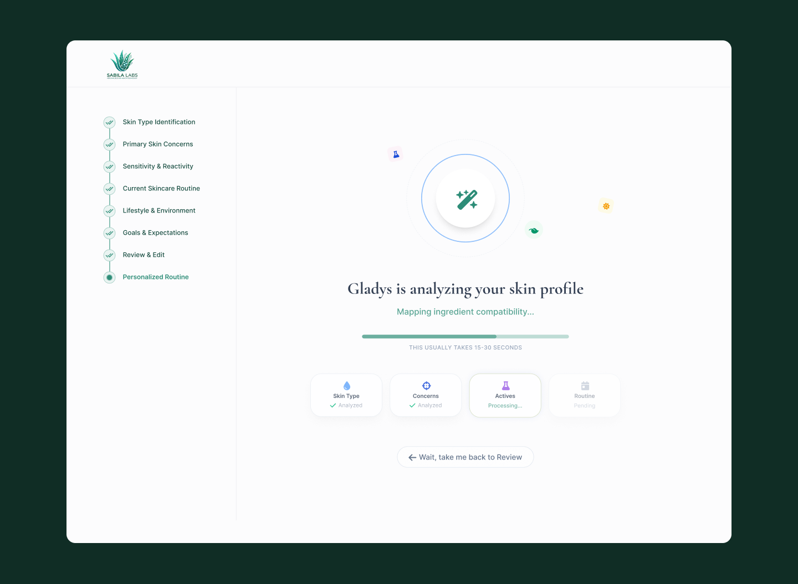
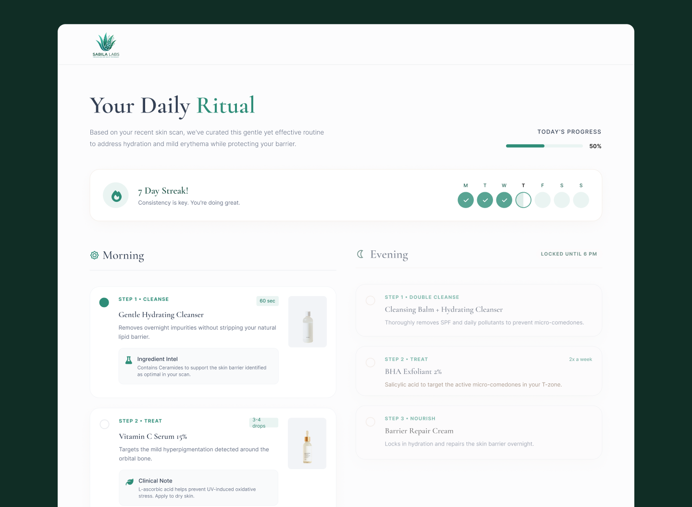
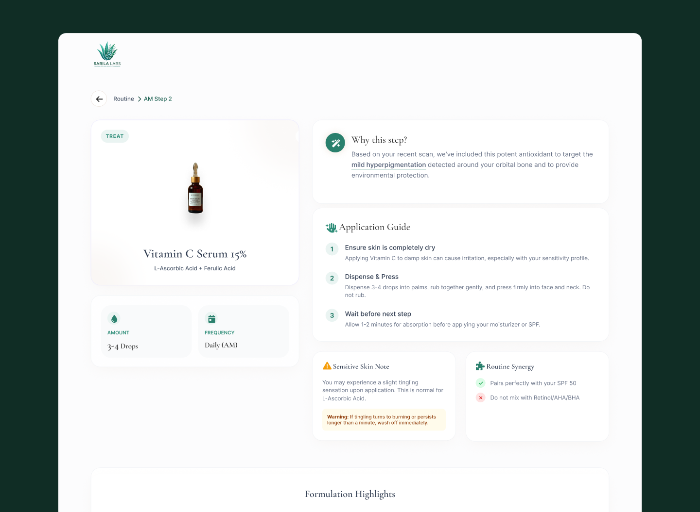

Gladys is an AI-powered skincare web app built by Sabila Labs. It uses a clinical assessment model to analyze each user's unique skin profile — type, concerns, sensitivity, lifestyle, and environment — then generates a fully personalized morning and evening routine with dermatology-backed ingredient intelligence.
The product needed to feel trustworthy, clinical, and deeply personal — like having a dermatologist in your pocket — while remaining approachable enough for everyday users.
"Discover your skin's true potential." — The app analyzes your unique skin profile to create a personalized, adaptive routine. Less guesswork, more glowing results.
The entry point needed to communicate credibility immediately while lowering the barrier to start. The landing card balances three key signals: a clear value proposition, a clinically-framed CTA ("Start Analysis"), and a privacy-first reassurance for skeptical users.
- Dermatology-backed ingredient intelligence
- Routines that adapt as your skin changes
- Track progress over time


The core of Gladys is a 7-step skin assessment, designed to gather meaningful clinical data without overwhelming the user. Each step targets a distinct skin variable, with a persistent sidebar showing overall progress and section status.
The sidebar acts as both a navigation map and a trust signal — users can see exactly how much data they've already shared, reducing drop-off anxiety mid-assessment.
- Step 1 — Skin Type Identification
- Step 2 — Primary Skin Concerns
- Step 3 — Sensitivity & Reactivity
- Step 4 — Current Skincare Routine
- Step 5 — Lifestyle & Environment
- Step 6 — Goals & Expectations
- Step 7 — Review & Edit → Personalized Routine


Step 1 — Skin Type Identification. Four clearly defined options with behavioral descriptions to remove ambiguity.
Step 5 captures the internal and external factors that most skin assessments ignore entirely. Sleep quality, daily hydration, stress levels, and environmental exposure (urban pollution, cold climate, UV intensity) all feed directly into ingredient prioritization.
This is what makes Gladys's output feel genuinely personalized rather than generic — it treats skin as a dynamic system, not a fixed type.

Step 5 — Lifestyle & Environment. Sliders for sleep and hydration, stress level selection, and environmental exposure tags. These variables directly influence actives prioritization.
After completing the assessment, Gladys runs a real-time analysis of the skin profile. The loading state was designed deliberately — rather than hiding the processing, it surfaces what the AI is doing: mapping ingredient compatibility, cross-referencing actives, building the routine.
This transparency reinforces trust. Users understand that a real analysis is happening, not a pre-packaged result.
The analysis screen shows four discrete processing steps — Skin Type, Concerns, Actives, Routine — each with a status indicator. This staged reveal makes the wait feel purposeful and builds confidence in the output.

AI Analysis screen — "Gladys is analyzing your skin profile. Mapping ingredient compatibility..." The progress sidebar shows all 8 steps completed.
The output is a personalized "Daily Ritual" dashboard — split into Morning and Evening routines, each step annotated with clinical reasoning. The dashboard also surfaces streak tracking, daily progress, and routine lock states (Evening is locked until 6 PM to prevent misuse of evening actives).
- Step-by-step AM and PM routines with timing and dosage
- Ingredient intel for each product — why this ingredient for your skin
- 7-day streak tracking with weekly completion view
- Progress percentage for the current day

Your Daily Ritual — AM routine featuring a Gentle Hydrating Cleanser and Vitamin C Serum 15%, each with clinical ingredient notes. PM routine is locked until 6 PM.
Each step in the routine links to a deep detail view — explaining exactly why this product was chosen for this user's specific scan results. The screen surfaces application guidance, routine synergies, and sensitive skin warnings where relevant.
- Why this step? — Clinical rationale tied directly to scan findings
- Application Guide — Step-by-step usage with timing notes
- Routine Synergy — What pairs well, what conflicts
- Sensitive Skin Note — Warnings for reactive profiles

Product detail view — Vitamin C Serum 15% (L-Ascorbic Acid + Ferulic Acid). Dosage, frequency, application guide, and a sensitive skin warning all derived from the user's profile.
Gladys is one of the most technically nuanced products I've worked on. The challenge wasn't the visual design — it was information architecture. How do you surface the right clinical detail without overwhelming a non-expert user? How do you make an AI output feel earned rather than arbitrary?
The answer was progressive disclosure paired with transparent reasoning. Every recommendation includes the "why" — not as a tooltip or hidden footnote, but as the primary content. Users who trust the reasoning are far more likely to follow the routine consistently.
If I returned to this, I'd explore how to handle routine evolution over time — as users' skin changes through seasons or life stages, Gladys should actively resurface the assessment to update the profile rather than waiting to be asked.